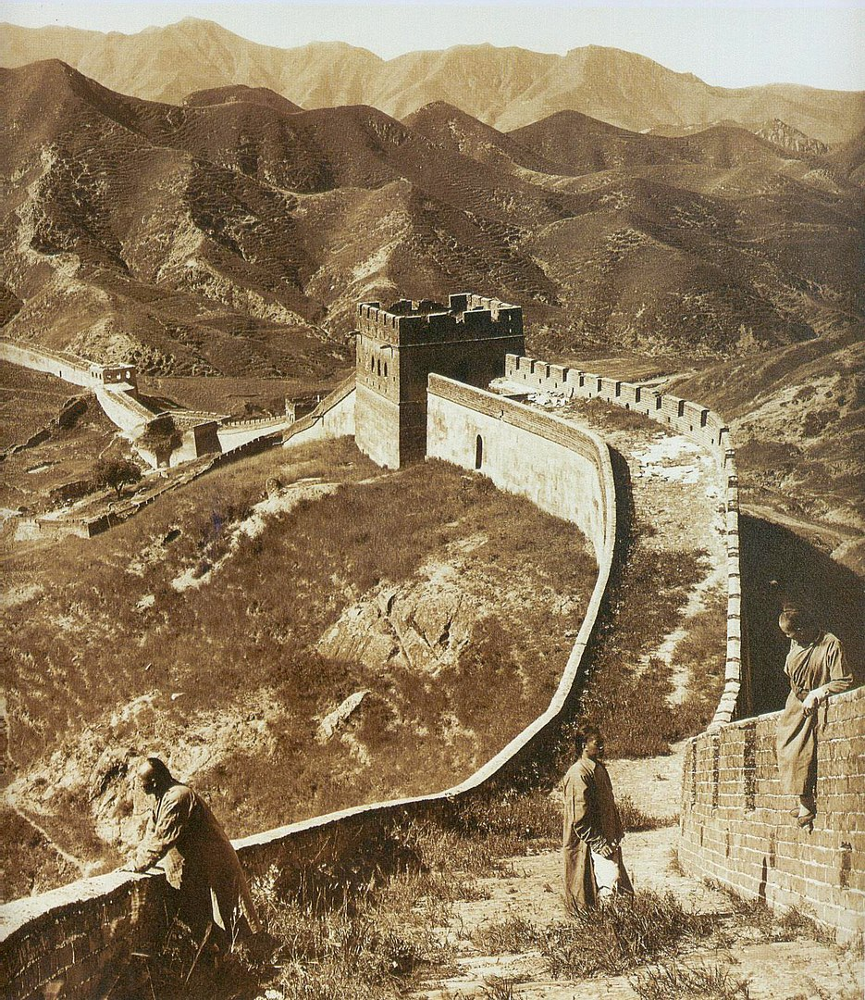
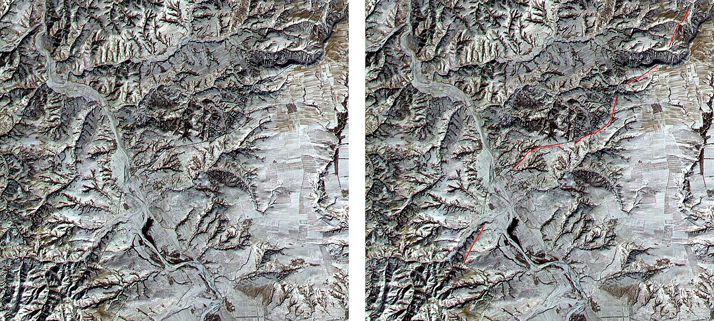
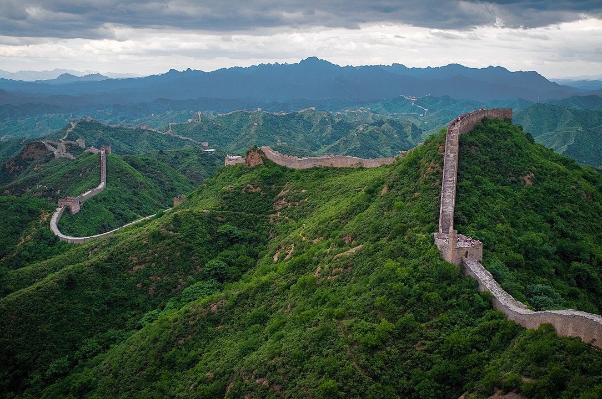
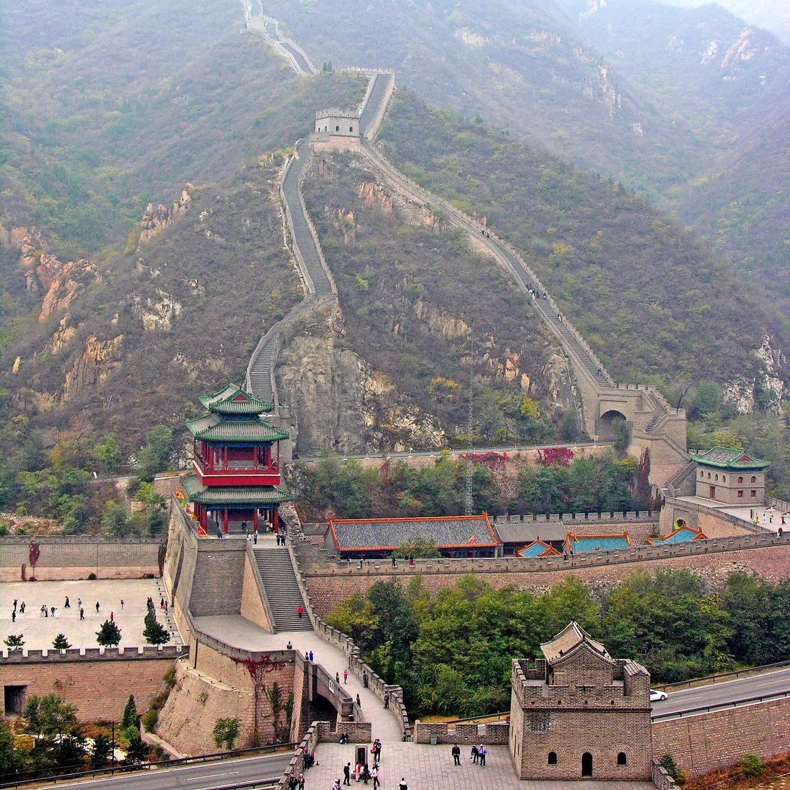

Huayi tu, an 1136 map of China with the Great Wall depicted on the northern edge of the country
Large parts of the fortification system date from the 7th through the 4th century BCE. In the 3rd century BCE Shihuangdi (Qin Shihuang), the first emperor of a united China (under the Qin dynasty), connected a number of existing defensive walls into a single system. Traditionally, the eastern terminus of the wall was considered to be Shanhai Pass (Shanhaiguan) in eastern Hebei province along the coast of the Bo Hai (Gulf of Chihli), and the wall's length—without its branches and other secondary sections—was thought to extend for some 4,160 miles (6,700 km). However, government-sponsored investigations that began in the 1990s revealed sections of wall in Liaoning, and aerial and satellite surveillance eventually proved that this wall stretched continuously through much of the province. The greater total length of the Ming wall was announced in 2009.
The Chinese were already familiar with the techniques of wall-building by the time of the Spring and Autumn period between the 8th and 5th centuries BC. During this time and the subsequent Warring States period, the states of Qin, Wei, Zhao, Qi, Han, Yan, and Zhongshan all constructed extensive fortifications to defend their own borders. Built to withstand the attack of small arms such as swords and spears, these walls were made mostly of stone or by stamping earth and gravel between board frames. King Zheng of Qin conquered the last of his opponents and unified China as the First Emperor of the Qin dynasty ("Qin Shi Huang") in 221 BC. Intending to impose centralized rule and prevent the resurgence of feudal lords, he ordered the destruction of the sections of the walls that divided his empire among the former states. To position the empire against the Xiongnu people from the north, however, he ordered the building of new walls to connect the remaining fortifications along the empire's northern frontier. "Build and move on" was a central guiding principle in constructing the wall, implying that the Chinese were not erecting a permanently fixed border
About the 7th century BCE the state of Chu started to construct a permanent defensive system. Known as the “Square Wall,” this fortification was situated in the northern part of the kingdom's capital province. From the 6th to the 4th century other states followed Chu's example. In the southern part of the Qi state an extensive perimeter wall was gradually created using existing river dikes, newly constructed bulwarks, and areas of impassable mountain terrain. The Qi wall was made mainly of earth and stone and terminated at the shores of the Yellow Sea. In the Zhongshan state a wall system was built to thwart invasion from the states of Zhao and Qin in the southwest. There were two defensive lines in the Wei state: the Hexi (“West of the [Yellow] River”) and Henan (“South of the River”) walls. The Hexi Wall was a fortification against the Qin state and western nomads. Built during the reign of King Hui (370-335 BCE), it was expanded from the dikes on the Luo River on the western border. It started in the south near Xiangyuan Cave, east of Mount Hua, and ended at Guyang in what is now the Inner Mongolia Autonomous Region. Henan Wall, built to protect Daliang (the capital, now Kaifeng), was repaired and extended in King Hui's later years. The Zheng state also built a wall system, which was rebuilt by the Han state after it conquered Zheng. The state of Zhao completed a southern wall and a northern wall; the southern wall was built mainly as a defense against the Wei state.
The Chinese were already familiar with the techniques of wall-building by the time of the Spring and Autumn period between the 8th and 5th centuries BC. During this time and the subsequent Warring States period, the states of Qin, Wei, Zhao, Qi, Han, Yan, and Zhongshan all constructed extensive fortifications to defend their own borders. Built to withstand the attack of small arms such as swords and spears, these walls were made mostly of stone or by stamping earth and gravel between board frames. King Zheng of Qin conquered the last of his opponents and unified China as the First Emperor of the Qin dynasty ("Qin Shi Huang") in 221 BC. Intending to impose centralized rule and prevent the resurgence of feudal lords, he ordered the destruction of the sections of the walls that divided his empire among the former states. To position the empire against the Xiongnu people from the north, however, he ordered the building of new walls to connect the remaining fortifications along the empire's northern frontier. "Build and move on" was a central guiding principle in constructing the wall, implying that the Chinese were not erecting a permanently fixed border.

The Great Wall in 1907
Visibility from space

Identical satellite images of a section of the Great Wall in northern
From the Moon
One of the earliest known references to the myth that the Great Wall can be seen from the moon appears in a letter written in 1754 by the English antiquary William Stukeley. Stukeley wrote that, "This mighty wall [Hadrian's wall] of four score miles [130 km] in length is only exceeded by the Chinese Wall, which makes a considerable figure upon the terrestrial globe, and may be discerned at the Moon." The claim was also mentioned by Henry Norman in 1895 where he states "besides its age it enjoys the reputation of being the only work of human hands on the globe visible from the Moon." The issue of "canals" on Mars was prominent in the late 19th century and may have led to the belief that long, thin objects were visible from space. The claim that the Great Wall is visible from the moon also appears in 1932's Ripley's Believe It or Not! strip.
From low Earth orbit
A more controversial question is whether the wall is visible from low Earth orbit (an altitude of as little as 160 km (100 mi)). NASA claims that it is barely visible, and only under nearly perfect conditions; it is no more conspicuous than many other human-made objects.Veteran US astronaut Gene Cernan has stated: "At Earth orbit of 100 to 200 miles [160 to 320 km] high, the Great Wall of China is, indeed, visible to the naked eye." Ed Lu, Expedition 7 Science Officer aboard the International Space Station, adds that, "It's less visible than a lot of other objects. And you have to know where to look." In October 2003, Chinese astronaut Yang Liwei stated that he had not been able to see the Great Wall of China. In response, the European Space Agency (ESA) issued a press release reporting that from an orbit between 160 and 320 km (100 and 200 mi), the Great Wall is visible to the naked eye. The image was actually a river in Beijing.
Construction
After administrative reorganization was carried out by Shang Yang (died 338 BCE), the Qin state grew politically and militarily to become the strongest among the seven states, but it was frequently raided by the Donghu and Loufan, two nomadic peoples from the north. Therefore, the Qin erected a wall that started from Lintiao, went north along the Liupan Mountains, and ended at the Huang He (Yellow River).In the Yan state two separate defensive lines were prepared—the Northern Wall and the Yishui Wall—in an effort to defend the kingdom from attacks by northern groups such as the Donghu, Linhu, and Loufan, as well as by the Qi state in the south. The Yishui Wall was expanded from the dike of the Yi River as a defense line against Qi and Zhao, its two main rival states.
During the reign of the Han emperor Wudi (141-87 BCE), the wall was strengthened as part of an overall campaign against the Xiongnu. From that period the Great Wall also contributed to the exploitation of farmland in northern and western China and to the growth of the trade route that came to be known as the Silk Road. In 121 BCE a 20-year project of construction was started on the Hexi Wall (generally known as the Side Wall) between Yongdeng (now in Gansu) in the east and Lake Lop Nur (now in Xinjiang) in the west. According to Juyan Hanjian (“Juyan Correspondence of the Han”), the strongpoints set up along the wall included “a beacon every 5 li, a tower every 10 li, a fort every 30 li, and a castle every 100 li.”

Great Wall of China

Great Wall of China at Juyong Pass
The main work on the wall during the Dong (Eastern) Han period (25-220 CE) took place during the reign of Liu Xiu (Guangwudi), who in 38 ordered the repair of four parallel lines of the Great Wall in the area south of the Hexi Wall. The Great Wall served not only for defense but also to centralize control of trade and travel. In order to strengthen its northern frontier and prevent invasion from the west by the Bei Zhou, the Bei Qi kingdom (550-577) launched several big construction projects that were nearly as extensive in scope as the building projects of the Qin dynasty. In 552 a segment was built on the northwestern border, and only three years later the emperor ordered the recruitment of 1.8 million workers to repair and extend other sections. The construction took place between the south entrance of Juyong Pass (near modern Beijing) and Datong (in Shanxi). In 556 a new fortification was set up in the east and extended to the Yellow Sea.
The following year a second wall was built inside the Great Wall within modern Shanxi, beginning in the vicinity of Laoying east of Pianguan, extending to the east beyond Yanmen Pass and Pingxing Pass, and ending in the area around Xiaguan in Shanxi. In 563 the emperor Wuchengdi of the Bei Qi had a segment repaired along the Taihang Mountains. That is the part of the Great Wall found today in the area around Longguan, Guangchang, and Fuping (in Shanxi and Hebei). In 565 the inner wall built in 557 was repaired, and a new wall was added that started in the vicinity of Xiaguan, extended to the Juyong Pass in the east, and then joined to the outer wall. The segments repaired and added during the Bei Qi period totaled some 900 miles (1,500 km), and towns and barracks were established at periodic intervals to garrison the new sections. In 579, in order to prevent invasions of the Bei Zhou kingdom by the Tujue (a group of eastern Turks) and the Khitan, the emperor Jing started a massive rebuilding program on areas of the wall located in the former Bei Qi kingdom, starting at Yanmen in the west and ending at Jieshi in the east.